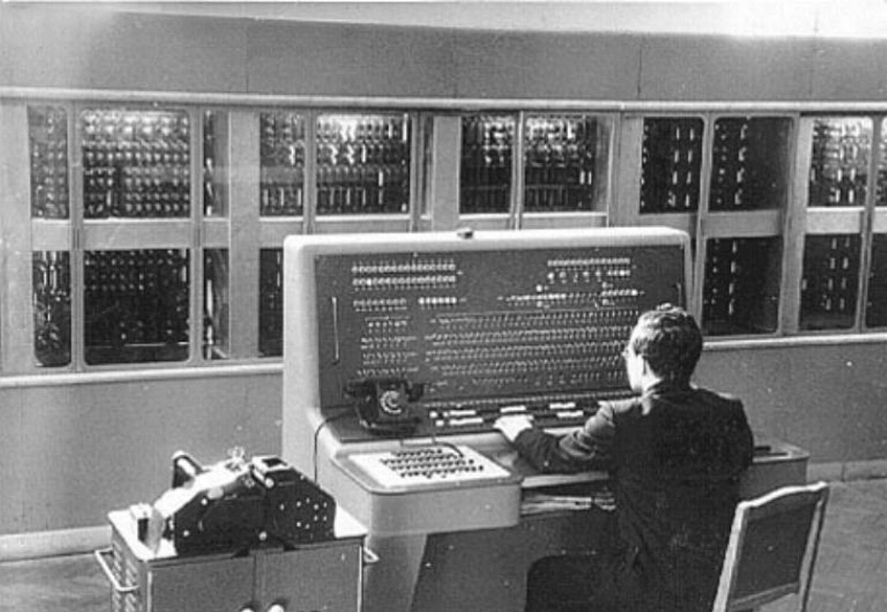

В 1985 году в СССР был создан НИИ информатики и вычислительной техники. В том же 1985 году в школах была введена учебная дисциплина «Информатика» и издан первый учебник — «Основы информатики и вычислительной техники» А. П. Ершова.
4 декабря отмечается День российской информатики, так как в этот день в 1948 году Государственный комитет Совета министров СССР по внедрению передовой техники в народное хозяйство зарегистрировал за номером 10 475 изобретение И. С. Брука и Б. И. Рамеева — цифровую электронную вычислительную машину M-1.
Цезарь говорит 13. uggcf://bireryvri.tvguho.vb/arj.ugzy